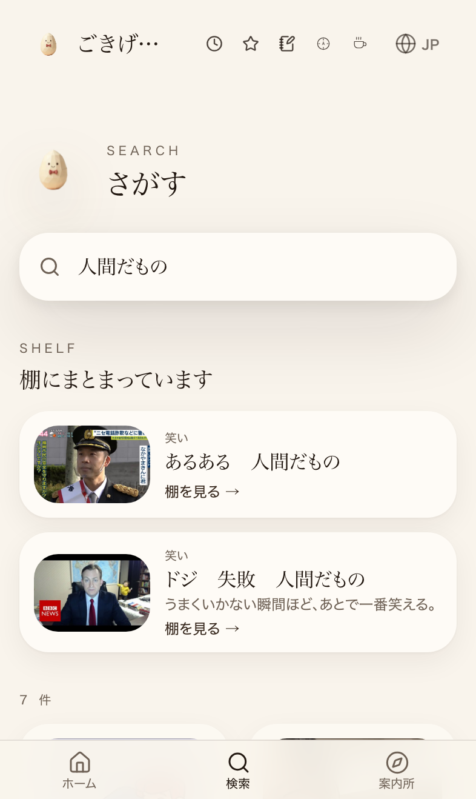
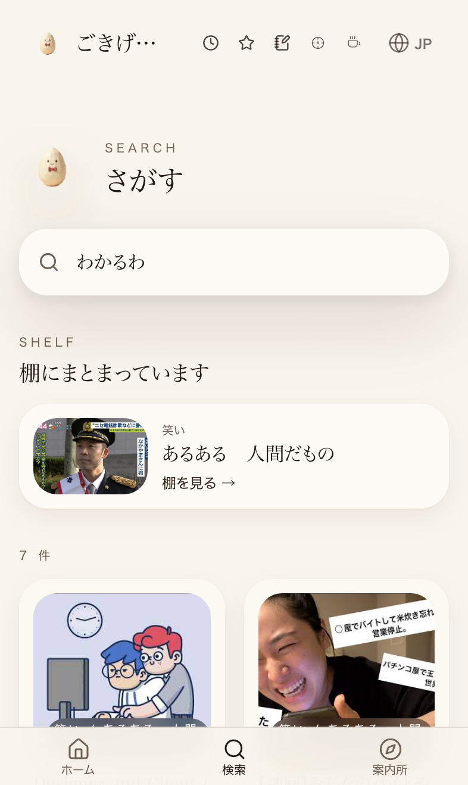
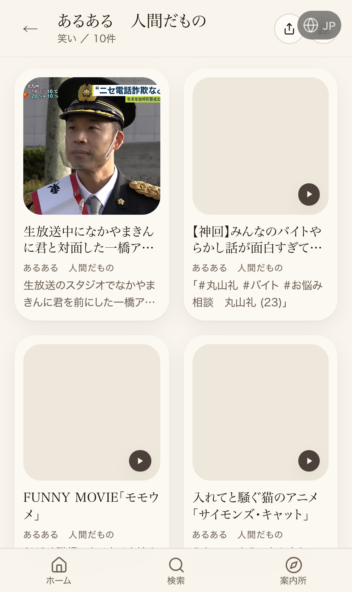

本番：/search?q=あるある／棚「あるある 人間だもの」
共通の裏タグ：あるある・アルアル・aruaru・あるあるネタ・わかる・わかるわ・共感・人間だもの。根拠は各カードの紹介文・公式の説明欄（推測では付けない）。仮置き6件は表示側で棚に入れた（外す：src/lib/uraTagAruaru.ts の ARUARU_KARI_ON を false）。
| カード | 棚 | 固有の裏タグ |
|---|---|---|
| Designer and Client / DeeKay Kwon | 新規（たまごさんが送った動画） | デザイナーとクライアント・仕事・職場 |
| 【神回】みんなのバイトやらかし話…【丸山礼】 | もともと棚にある（たまごさんが入れた） | バイト・バイトあるある・やらかし |
| モモウメ / FUNNY MOVIE | 仮置き | 職場あるある・SNS・OL |
| モモウメ「OL編・コピー機」 | 仮置き | 職場あるある・コピー機・締切 |
| ナミミコ「爪切りキャンセル界隈の裏側」 | 仮置き | 猫あるある・飼い主 |
| Cat Man Do - Simon's Cat | 仮置き | 猫あるある・飼い主 |
| Let Me In! - Simon's Cat | 仮置き | 猫あるある・飼い主 |
付けなかったもの：FUNNY MOVIE「マウント用語辞典」「仕事が全てじゃないけど」＝紹介文はあるある系だが、曲ページの動画が別の回（紹介文と中身が合わない）。
| 検索語 | 前（本番・名簿検索の初期表示） | 後（本番・頭なしブラウザで実測） |
|---|---|---|
| あるある | モモウメ / FUNNY MOVIE | 棚：あるある 人間だもの 1. Designer and Client / DeeKay Kwon 2. 【神回】みんなのバイトやらかし話が面白すぎて全国民必見だと思う【丸山礼】 / 丸山礼チャンネル 3. FUNNY MOVIE「モモウメ」 4. FUNNY MOVIE「モモウメ「OL編・コピー機」」 5. FUNNY MOVIE「ナミミコ「爪切りキャンセル界隈の裏側」」 6. Cat Man Do - Simon's Cat 7. Let Me In! - Simon's Cat |
| 人間だもの | 0件 | 棚：あるある 人間だもの／ドジ 失敗 人間だもの 1. Designer and Client / DeeKay Kwon 2. 【神回】みんなのバイトやらかし話が面白すぎて全国民必見だと思う【丸山礼】 / 丸山礼チャンネル 3. FUNNY MOVIE「モモウメ」 4. FUNNY MOVIE「モモウメ「OL編・コピー機」」 5. FUNNY MOVIE「ナミミコ「爪切りキャンセル界隈の裏側」」 6. Cat Man Do - Simon's Cat 7. Let Me In! - Simon's Cat |
| わかるわ | 0件 | 棚：あるある 人間だもの 1. Designer and Client / DeeKay Kwon 2. 【神回】みんなのバイトやらかし話が面白すぎて全国民必見だと思う【丸山礼】 / 丸山礼チャンネル 3. FUNNY MOVIE「モモウメ」 4. FUNNY MOVIE「モモウメ「OL編・コピー機」」 5. FUNNY MOVIE「ナミミコ「爪切りキャンセル界隈の裏側」」 6. Cat Man Do - Simon's Cat 7. Let Me In! - Simon's Cat |
| aruaru | 0件 | 棚：あるある 人間だもの 1. Designer and Client / DeeKay Kwon 2. 【神回】みんなのバイトやらかし話が面白すぎて全国民必見だと思う【丸山礼】 / 丸山礼チャンネル 3. FUNNY MOVIE「モモウメ」 4. FUNNY MOVIE「モモウメ「OL編・コピー機」」 5. FUNNY MOVIE「ナミミコ「爪切りキャンセル界隈の裏側」」 6. Cat Man Do - Simon's Cat 7. Let Me In! - Simon's Cat 8. UA - 太陽手に月は心の両手に (Live 2024.10.21 @EX THEATER ROPPONGI) |
「前」は本番の初期HTMLに乗っていた名簿検索の結果（ブラウザで後から足される関連動画は含まない）。


